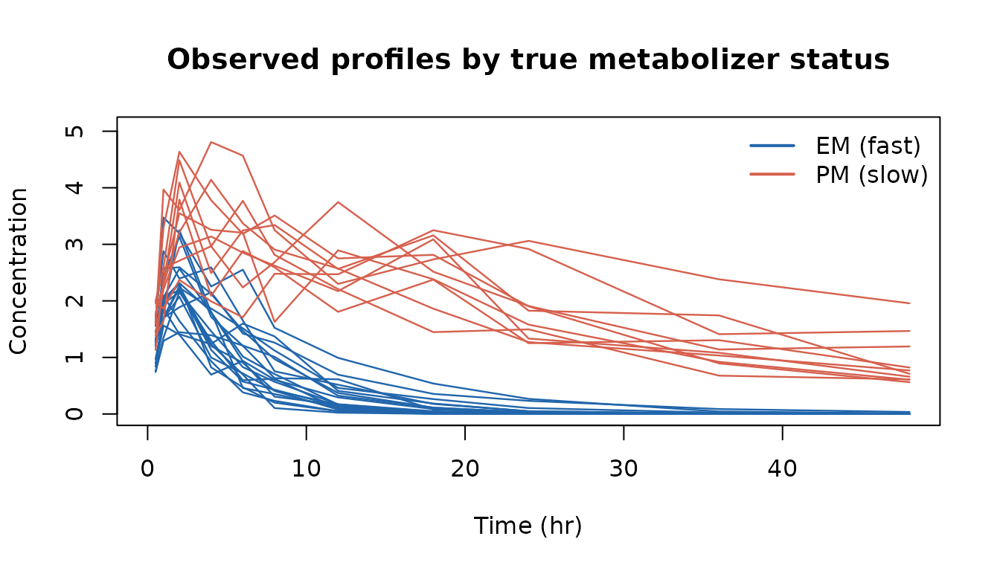
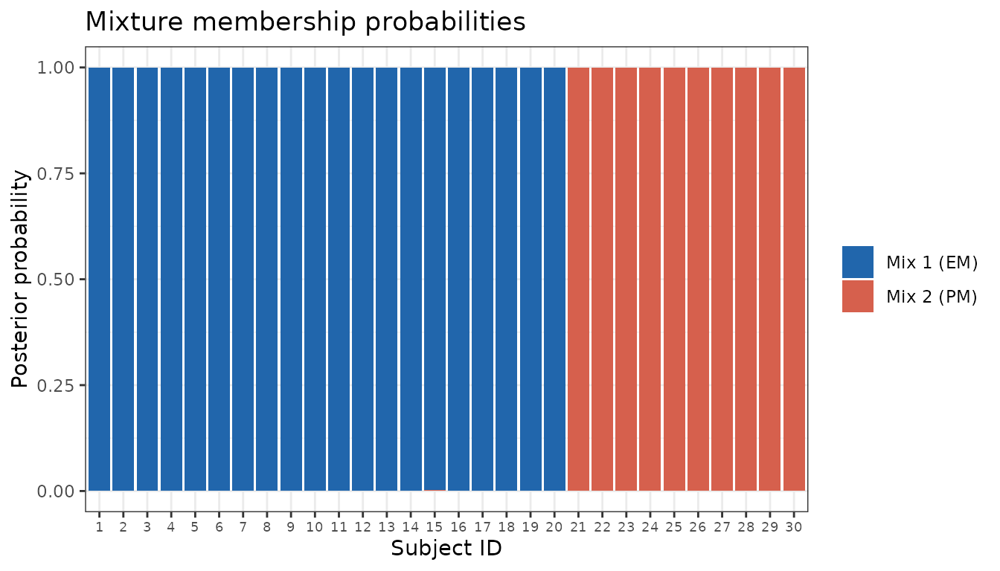

Overview
Mixture models describe populations where individuals belong to one of several latent subpopulations, each with distinct fixed-effect parameters. The classic pharmacokinetic example is bimodal clearance due to a polymorphic drug-metabolizing enzyme: extensive metabolizers (EM) clear the drug quickly while poor metabolizers (PM) clear it slowly. A standard single-population model will fit neither group well and will produce inflated between-subject variability for clearance.
nlmixr2est supports mixture models via the
mix() function inside the model block. The following
estimation methods all support mixture models:
| Method | Description |
|---|---|
focei |
First-Order Conditional Estimation with Interaction (recommended) |
foce |
First-Order Conditional Estimation |
fo |
First-Order |
foi |
First-Order with Interaction |
laplace |
Laplace approximation |
agq |
Adaptive Gaussian Quadrature |
saem |
Stochastic Approximation Expectation-Maximization |
imp |
Importance sampling (Monte-Carlo EM) |
impmap |
Importance sampling around the MAP estimate |
qrpem |
Quasi-random parametric EM |
npag |
Nonparametric adaptive grid |
npb |
Nonparametric Bayesian (Dirichlet-process) |
Two methods reject a mix() model up
front rather than fitting something misleading: emvi and
fbvi (mean-field variational inference on the
theta-sensitivity model, which has no mixture structure) stop with
cannot have a mixture model (ie 'mix()') for the estimation routine.
vae does not currently fit a mixture model either.
The gradient-based methods (focei, foce,
fo, foi, laplace,
agq) all use the same hard-assignment strategy
described below and reliably separate mixture components with high
precision. SAEM’s mixture machinery is a soft-assignment (EM
responsibility) scheme, described in its own section, Mixture Models with SAEM — though
its default, mixProbMethod = "regress", hard-classifies
each subject once and skips the per-iteration responsibility step, which
is what makes the default immune to the mixing-probability collapse that
scheme is otherwise prone to. Even so, on small or weakly-separated
datasets it may separate components less precisely than the
gradient-based methods. focei is recommended when
precise per-subject classification matters; SAEM is a usable alternative
that may need tuning (see its section) to match it. The
EM/sampling and nonparametric families are covered in Other estimation families.
rxode2 requirements. Nested transformations inside
mix()— for examplemix(expit(tcl1 + eta.cl, 0.1, 200), p1, ...)— require rxode2 >= 5.1.3. Earlier versions translate only the top-levelmix()arguments and will silently mis-handle the innerexpit()/logit()/exp()calls.Reading
mixest/mixnumback out of the fitted table (see Reading the component off the fit table) additionally requires an rxode2 carrying the fix in nlmixr2/rxode2#1358, which is newer than 5.1.7. This was a bug, not a design limit: up to that version the prediction model lost itsmix()call to symengine and rxode2 no longer read it as a mixture, so those columns — and every model variable computed frommix()— came back as0for every row, withPRED/IPREDcomputed from those zeros. You do not have to check the version: a fit on an affected rxode2 now says so in$runInfo("mixture not passed to table; mixest/mixnum read 0"). The parameter estimates,$mixNumand$mixListwere never affected — the bug was confined to the table.
Motivating Example: Bimodal Clearance
To illustrate the approach we simulate a 30-subject study with two distinct clearance populations — roughly mimicking a drug whose metabolism is governed by a CYP2D6 polymorphism.
library(nlmixr2est)
library(rxode2)
set.seed(2024)
# True population parameters
tclEm <- log(8) # fast metabolizers (EM), CL = 8 L/hr
tclPm <- log(0.8) # slow metabolizers (PM), CL = 0.8 L/hr (10× lower)
tv <- log(30) # volume of distribution
tka <- log(1.2) # absorption rate constant
sigma <- 0.20 # proportional residual SD
omegaCl <- 0.09 # BSV on CL (variance)
omegaV <- 0.04 # BSV on V
nEm <- 20 # 67% extensive metabolizers
nPm <- 10 # 33% poor metabolizers
n <- nEm + nPm
# Simulate per-subject parameters
clTrue <- c(
exp(tclEm + rnorm(nEm, 0, sqrt(omegaCl))),
exp(tclPm + rnorm(nPm, 0, sqrt(omegaCl)))
)
vTrue <- exp(tv + rnorm(n, 0, sqrt(omegaV)))
kaTrue <- rep(exp(tka), n)
group <- rep(c("EM (fast)", "PM (slow)"), c(nEm, nPm))
# Observation times
times <- c(0.5, 1, 2, 4, 6, 8, 12, 18, 24, 36, 48)
# One-compartment oral model
modSim <- rxode2({
d/dt(depot) <- -ka * depot
d/dt(central) <- ka * depot - (cl / v) * central
cp <- central / v
})
simRows <- vector("list", n)
for (i in seq_len(n)) {
ev <- et(amt = 100, time = 0) |> et(time = times)
out <- rxSolve(modSim,
params = c(ka = kaTrue[i], cl = clTrue[i], v = vTrue[i]),
events = ev)
dv <- out$cp * exp(rnorm(length(times), 0, sigma))
simRows[[i]] <- data.frame(
ID = i,
time = times,
DV = pmax(dv, 1e-6),
group = group[i],
AMT = 0,
EVID = 0
)
}
# Add dosing rows (EVID=1)
doseRows <- data.frame(
ID = seq_len(n), time = 0, DV = NA_real_,
group = group, AMT = 100, EVID = 1
)
simData <- rbind(doseRows, do.call(rbind, simRows))
simData <- simData[order(simData$ID, simData$time), ]Why a standard model fails
Plotting the raw concentration–time profiles immediately reveals the bimodality:
obs <- simData[simData$EVID == 0, ]
# manual colour palette — no external packages needed
cols <- c("EM (fast)" = "#2166AC", "PM (slow)" = "#D6604D")
plot(NA, xlim = c(0, 48), ylim = c(0, max(obs$DV) * 1.05),
xlab = "Time (hr)", ylab = "Concentration",
main = "Observed profiles by true metabolizer status")
for (grp in c("EM (fast)", "PM (slow)")) {
sub <- obs[obs$group == grp, ]
for (id in unique(sub$ID)) {
d <- sub[sub$ID == id, ]
lines(d$time, d$DV, col = cols[grp], lwd = 1.2)
}
}
legend("topright", legend = names(cols), col = cols, lwd = 2, bty = "n")
Simulated PK profiles coloured by true metabolizer status. The 10-fold difference in clearance creates two non-overlapping trajectory bundles — a standard single-population model cannot capture this structure.
The two bundles of trajectories are separated by roughly an order of magnitude in exposure — exactly the situation where a mixture model should be used.
Model Specification
Mixture models are declared with
mix(expr1, prob1, expr2, ...):
-
expr1,expr2, … are the parameter expressions for each component -
prob1is the prior mixing probability for the first component; the last component’s probability is implicit (1 - prob1) - One fewer probability parameter than components is required
twoPop <- function() {
ini({
tka <- log(1.2) # log Ka
tcl1 <- logit(0.8, 0.1, 200) # log Cl, EM subpopulation
tcl2 <- logit(0.8, 0.1, 200) # log Cl, PM subpopulation
tv <- log(30) # log V
p1 <- 0.67 # prior prob of being an EM
eta.cl ~ 0.09
eta.v ~ 0.04
add.sd <- 0.2
})
model({
ka <- exp(tka)
cl <- mix(expit(tcl1 + eta.cl, 0.1, 200), p1, expit(tcl2 + eta.cl, 0.1, 200))
v <- exp(tv + eta.v)
linCmt() ~ add(add.sd)
})
}Fitting
fit := nlmixr2(twoPop, simData, "focei",
control = foceiControl(print = 0))
print(fit)
#> ── nlmixr² FOCEi (outer: bobyqa) ──
#>
#> OBJF AIC BIC Log-likelihood Condition#(Cov)
#> FOCEi -262.1474 360.3521 390.7448 -172.176 2020.141
#> Condition#(Cor)
#> FOCEi 55.8794
#>
#> ── Time (sec $time): ──
#>
#> setup optimize covariance preprocess postprocess table compress
#> elapsed 2.574444 1.071376 0.8652653 0.051 0.05 0.08 0.007
#> other
#> elapsed 0.6319146
#>
#> ── Population Parameters ($parFixed or $parFixedDf): ──
#>
#> Est. SE %RSE Back-transformed(95%CI) BSV(CV% or SD) Shrink(SD)%
#> tka 0.169 0.0476 28.1 1.18 (1.08, 1.30)
#> tcl1 -3.32 0.0843 2.54 7.06 (6.03, 8.26)
#> tcl2 -5.69 0.122 2.14 0.772 (0.629, 0.952)
#> tv 3.38 0.0369 1.09 29.4 (27.4, 31.6) 18.5 13.1
#> p1 0.648 0.0862 13.3 0.648 (0.467, 0.794)
#> add.sd 0.327 0.0387 11.8 0.327 (0.251, 0.403)
#> eta.cl 0.355 6.89
#>
#> Covariance Type ($covMethod): r,s
#> Some strong fixed parameter correlations exist ($cor) :
#> cor:tcl1,tka cor:tcl2,tka cor:tv,tka
#> -0.150 -0.667 0.382
#> cor:p1,tka cor:add.sd,tka cor:om.eta.cl,tka
#> -0.263 0.554 0.471
#> cor:om.eta.v,tka cor:tcl2,tcl1 cor:tv,tcl1
#> 0.140 0.0550 0.0234
#> cor:p1,tcl1 cor:add.sd,tcl1 cor:om.eta.cl,tcl1
#> 0.000620 -0.139 -0.237
#> cor:om.eta.v,tcl1 cor:tv,tcl2 cor:p1,tcl2
#> -0.169 -0.434 -0.00764
#> cor:add.sd,tcl2 cor:om.eta.cl,tcl2 cor:om.eta.v,tcl2
#> -0.410 -0.365 -0.107
#> cor:p1,tv cor:add.sd,tv cor:om.eta.cl,tv
#> 0.221 -0.0438 0.136
#> cor:om.eta.v,tv cor:add.sd,p1 cor:om.eta.cl,p1
#> 0.540 -0.847 0.161
#> cor:om.eta.v,p1 cor:om.eta.cl,add.sd cor:om.eta.v,add.sd
#> 0.231 0.0798 -0.166
#> cor:om.eta.v,om.eta.cl
#> 0.213
#>
#>
#> No correlations in between subject variability (BSV) matrix
#> Full BSV covariance ($omega) or correlation ($omegaR; diagonals=SDs)
#> Distribution stats (mean/skewness/kurtosis/p-value) available in $shrink
#> Information about run found ($runInfo):
#> • gradient problems with covariance; see $scaleInfo
#> • last objective function was not at minimum, possible problems in optimization
#> • ETAs were reset to zero during optimization; (Can control by foceiControl(resetEtaP=.))
#> Censoring ($censInformation): No censoring
#> Minimization message ($message):
#> Normal exit from bobyqa
#>
#> ── Fit Data (object is a modified tibble): ──
#> # A tibble: 330 × 21
#> ID TIME DV PRED RES WRES IPRED IRES IWRES CPRED CRES CWRES
#> <fct> <dbl> <dbl> <dbl> <dbl> <dbl> <dbl> <dbl> <dbl> <dbl> <dbl> <dbl>
#> 1 1 0.5 1.30 1.52 -0.218 -0.509 1.39 -0.0929 -0.284 1.51 -0.213 -0.514
#> 2 1 1 1.87 2.36 -0.492 -0.908 2.16 -0.297 -0.908 2.35 -0.484 -0.941
#> 3 1 2 1.41 3.08 -1.67 -2.56 2.82 -1.41 -4.32 3.07 -1.66 -2.71
#> # ℹ 327 more rows
#> # ℹ 9 more variables: eta.cl <dbl>, eta.v <dbl>, depot <dbl>, central <dbl>,
#> # ka <dbl>, cl <dbl>, v <dbl>, tad <dbl>, dosenum <int>The back-transformed p1 of 0.648 is
close to the true EM prevalence (0.67). The two component clearances
(tcl1 → 7.06 L/hr, tcl2 → 0.772 L/hr) recover
the simulated 8 and 0.8 L/hr. p1 now also carries a
standard error and a confidence interval — see Standard errors for
the mixture proportions for what they mean and how they are
computed.
The simulation above multiplies by
exp(rnorm(...)), i.e. a proportional (log-normal) residual error, while the model fits an additive one (add(add.sd)) to keep the example short. The structural parameters and the mixture are recovered regardless, but do not read the estimatedadd.sdagainst the simulatedsigma— they are not the same quantity.
Why the estimates are good
A standard single-population FOCEI fit would instead produce a single clearance estimate somewhere between 0.8 and 8 L/hr together with an implausibly large BSV for CL (> 100%), because the model would try to explain the bimodal exposure distribution through random effects alone.
Accessing Mixture Results
After fitting, the subpopulation each subject was assigned to is available in three places: two accessors on the fit object, and — for a model that asks for it — as columns of the fitted table itself.
$mixNum — best-fit subpopulation per subject
head(fit$mixNum, 8)
#> ID mixnum
#> 1 1 1
#> 2 2 1
#> 3 3 1
#> 4 4 1
#> 5 5 1
#> 6 6 1
#> 7 7 1
#> 8 8 1mixnum = 1 → EM (fast), mixnum = 2 → PM
(slow). In a real analysis you would merge this back into the data frame
and verify concordance with any available genotype or phenotype
data.
Two different things are called
mixnum. Themixnumcolumn of$mixNum, above, is the component each subject was assigned to. Themixnumreserved model variable is the number of components in the model — a constant. The per-subject component in a model ismixest. This article names its output variablescomponentandnComponentsto keep the two apart.
$mixList — per-component ETAs and posterior
probabilities
# ETAs and posterior probability of belonging to EM component
head(fit$mixList$mix1)
#> ID eta.cl eta.v prob
#> 1 1 0.38910511 0.08630242 1.0000000
#> 2 2 0.17692678 -0.04193177 1.0000000
#> 3 3 0.01030720 -0.09750194 1.0000000
#> 4 4 -0.05797995 0.33624559 0.9999999
#> 5 5 0.38622974 -0.07623541 1.0000000
#> 6 6 0.47526022 0.01014936 1.0000000prob is the Bayesian posterior probability that subject
belongs to component
:
where OBJI is the individual objective function for subject evaluated under mixture component and is the estimated prior mixture probability.
Subjects with prob ≈ 1 are unambiguously assigned;
subjects with intermediate prob values (e.g. 0.3–0.7) are
phenotypically ambiguous.
Reading the component off the fit table
A model may also assign the reserved variables mixest
(the component this subject was fit under) and mixnum (how
many components the model has) to output variables, and they then appear
as columns of the fitted table alongside everything else the model
computes:
twoPopComp <- function() {
ini({
tka <- log(1.2)
tcl1 <- logit(0.8, 0.1, 200)
tcl2 <- logit(0.8, 0.1, 200)
tv <- log(30)
p1 <- 0.67
eta.cl ~ 0.09
eta.v ~ 0.04
add.sd <- 0.2
})
model({
ka <- exp(tka)
cl <- mix(expit(tcl1 + eta.cl, 0.1, 200), p1, expit(tcl2 + eta.cl, 0.1, 200))
v <- exp(tv + eta.v)
component <- mixest # which subpopulation this subject is in
nComponents <- mixnum # how many there are (a constant)
linCmt() ~ add(add.sd)
})
}
fitComp := nlmixr2(twoPopComp, simData, "focei",
control = foceiControl(print = 0))
head(as.data.frame(fitComp)[, c("ID", "TIME", "component", "nComponents",
"cl", "v")])
#> ID TIME component nComponents cl v
#> 1 1 0.5 1 2 10.20061 32.09465
#> 2 1 1.0 1 2 10.20061 32.09465
#> 3 1 2.0 1 2 10.20061 32.09465
#> 4 1 4.0 1 2 10.20061 32.09465
#> 5 1 6.0 1 2 10.20061 32.09465
#> 6 1 8.0 1 2 10.20061 32.09465component is per subject and agrees with
$mixNum; nComponents is the same constant on
every row. IPRED is the prediction under that subject’s own
component. PRED, being the population prediction,
takes one value per component per time point, so a PRED-versus-time plot
of a two-component mixture shows two curves rather than one — that is
expected, not a fitting problem. This is the most convenient route when
you want the component next to the individual parameters and predictions
rather than in a separate data frame — note that cl above
is the clearance of the component the subject was actually assigned to,
not an average over components.
The name you assign to is yours;
mixest/mixnum are the reserved variables on
the right-hand side. mixunif, the third reserved variable,
is only meaningful for simulation from a mix()
model — in a fitted table it reports the component that was supplied
rather than a uniform draw, so use mixest there.
These columns require an rxode2 carrying the fix described in the requirements note in the Overview. On an older one they read
0and the fit says so in$runInfo.
Checking classification accuracy (when true labels are known)
In a simulation study the true labels can be compared directly:
# Merge predicted mixture assignment with true labels
truth <- data.frame(ID = seq_len(n), trueGroup = group)
comp <- merge(fit$mixNum, truth, by = "ID")
comp$predicted <- ifelse(comp$mixnum == 1, "EM (fast)", "PM (slow)")
table(Predicted = comp$predicted, True = comp$trueGroup)
#> True
#> Predicted EM (fast) PM (slow)
#> EM (fast) 20 0
#> PM (slow) 0 10Perfect classification in this example — the 10× clearance difference makes the two populations easy to separate.
Check the label order before reading that table. The
ifelse()above hard-codes “component 1 is EM”, which is only true because this fit happened to land that way. Nothing constrains which component gets which index, and a different seed, dataset or method can swap them. A swapped run makes the identical code report zero agreement, which looks like a failed fit and is not one. Confirm the order from the estimates — compare the back-transformedtcl1/tcl2against what you expect each subpopulation’s clearance to be — before labelling the components.
Interpreting the $parFixed Table
Mixture probability parameters (e.g. p1) are estimated
on the mlogit scale internally. nlmixr2est automatically
back-transforms them to the probability scale in the
Back-transformed column. The back-transformation is applied
jointly across all mixture probability parameters via
rxode2::mexpit(), preserving the constraint that
probabilities sum to 1 across components.
Standard errors for the mixture proportions
p1 gets a standard error, a %RSE and a confidence
interval like any other parameter. (Older versions of nlmixr2est
reported NA here.) The quantity behind them is the NONMEM 7
Technical Guide’s own construction, eq. (7.51)-(7.54): the mixture
parameters’ information matrix is the outer product of the per-subject
scores
where
is subject
’s
posterior responsibility for component
(the prob column of $mixList) and
the estimated proportion. That is the same score the estimation itself
uses, so the SE costs no extra model solves.
Three things are worth knowing about how it is reported.
It is on the probability scale. The proportions are
estimated as a multinomial logit, but reporting an SE there
would put it next to an estimate that is a probability. The covariance
is therefore rotated with the full Jacobian of mexpit(),
,
so $cov, the SE, the %RSE and the CI all sit on the same
scale as the estimate. Using the full Jacobian rather than just
its diagonal is what carries the proportions’ correlations — with each
other and with the structural thetas — onto that scale.
The interval is a logit-scale interval. A symmetric walks out of for a proportion near either end. The reported CI is , which stays inside and is asymmetric — which is the honest shape here.
Near a boundary the SE shrinks toward zero. The
rotation carries a factor of
,
so a proportion sitting at 0 or 1 gets a very small SE. That is the
correct delta-method answer but it reads as certainty, when really the
Wald approximation has stopped being informative; the fit says so in
$runInfo when it happens. Treat a near-boundary proportion
as “this component may not be supported by the data”, not as a precise
estimate.
Which covariance methods provide it:
covMethod |
Mixture proportion SE |
|---|---|
"r,s", "r", "s"
|
yes (the default route for focei and its
relatives) |
"imp" |
yes |
"analytic" |
declines for a mixture and falls back to the finite-difference sandwich, which does provide it |
linFim / fim / sa
(saem) |
only when the fit is at the mixture’s score-zero point; see below |
saem leaves the proportions out of the parameter vector
its kernel converges, so the block is appended from the fit’s own
responsibilities — and only when
actually holds. An information matrix describes the precision of a
maximum-likelihood estimate, and away from that point it would be a
confident-looking number attached to something that is not one. When the
identity fails, the fit says so in $runInfo and reports no
SE rather than a misleading one.
For individual-level uncertainty — how sure the fit is about this
subject’s membership, as opposed to the population proportion — use
the prob columns of $mixList.
Using $mixNum in Downstream Analysis
library(dplyr)
fitData <- as.data.frame(fit)
fitAug <- left_join(fitData, fit$mixNum, by = "ID")
fitAug |>
group_by(mixnum) |>
summarize(
nSubjects = n_distinct(ID),
medianCl = median(cl, na.rm = TRUE),
medianIpred = median(IPRED, na.rm = TRUE),
.groups = "drop"
)
#> # A tibble: 2 × 4
#> mixnum nSubjects medianCl medianIpred
#> <int> <int> <dbl> <dbl>
#> 1 1 20 7.43 3.17
#> 2 2 10 0.862 3.39Visualizing Posterior Probabilities
library(ggplot2)
library(dplyr)
probs <- bind_rows(
mutate(fit$mixList$mix1, component = "Mix 1 (EM)"),
mutate(fit$mixList$mix2, component = "Mix 2 (PM)")
)
ggplot(probs, aes(x = factor(ID), y = prob, fill = component)) +
geom_col() +
scale_fill_manual(values = c("Mix 1 (EM)" = "#2166AC", "Mix 2 (PM)" = "#D6604D")) +
labs(x = "Subject ID", y = "Posterior probability",
title = "Mixture membership probabilities",
fill = NULL) +
theme_bw() +
theme(axis.text.x = element_text(size = 7))
Most subjects will show a bar that is essentially 100% one colour, confirming clear separation of the two populations.
Mixture Models with SAEM
SAEM accepts the same mix() model syntax as the
gradient-based methods, so the twoPop model defined above
can be submitted to it directly:
fitSaem := nlmixr2(twoPop, simData, "saem",
control = saemControl(nBurn = 200, nEm = 300, print = 0))
print(fitSaem)
#> ── nlmixr² SAEM OBJF by FOCEi approximation ──
#>
#> Gaussian/Laplacian Likelihoods: AIC() or $objf etc.
#> FOCEi CWRES & Likelihoods: addCwres()
#>
#> ── Time (sec $time): ──
#>
#> setup optimize covariance preprocess configure saem postprocess
#> elapsed 0.09751632 3.8433e-05 0.0350059 0.071 0.759 19.5 0.797
#> table compress other
#> elapsed 0.026 0.092 0.8464394
#>
#> ── Population Parameters ($parFixed or $parFixedDf): ──
#>
#> Est. SE %RSE Back-transformed(95%CI) BSV(CV% or SD) Shrink(SD)%
#> tka 0.185 0.0347 18.8 1.20 (1.12, 1.29)
#> tcl1 -4.04 3.56
#> tcl2 -6.54 0.389
#> tv 3.38 0.0330 0.977 29.5 (27.6, 31.4) 17.9 11.5
#> p1 0.866 0.0980 11.3 0.866 (0.553, 0.971)
#> add.sd 0.326 0.326
#> eta.cl 1.10 29.2
#>
#> Covariance Type ($covMethod): linFim
#> Fixed parameter correlations in $cor
#> No correlations in between subject variability (BSV) matrix
#> Full BSV covariance ($omega) or correlation ($omegaR; diagonals=SDs)
#> Distribution stats (mean/skewness/kurtosis/p-value) available in $shrink
#> Information about run found ($runInfo):
#> • error calculating tables, returning without table step
#> • diag(V) had non-positive or NA entries; the non-finite result may be dubious
#> Censoring ($censInformation): No censoringtka and tv get real, finite SEs;
tcl1/tcl2 (the mixture-owned fixed effects)
correctly show no SE rather than either an error or a fabricated number
— see the covariance callout below. p1 does now carry an
SE: the proportion is reported at its score-zero point, which is the
condition the mixture information matrix needs (see Standard errors for
the mixture proportions).
Compare the back-transformed p1 above against the true
EM prevalence of 0.67, and check that fitSaem$mixNum is a
real rather than a collapsed split:
table(fitSaem$mixNum$mixnum)
#>
#> 1 2
#> 28 2Cross-tabulated against the true labels. Which component gets index 1 is not fixed, so read the counts rather than the row labels (see the caution above):
compSaem <- merge(fitSaem$mixNum, truth, by = "ID")
compSaem$predicted <- ifelse(compSaem$mixnum == 1, "component 1", "component 2")
table(Predicted = compSaem$predicted, True = compSaem$trueGroup)
#> True
#> Predicted EM (fast) PM (slow)
#> component 1 20 8
#> component 2 0 2SAEM typically separates these two subpopulations less cleanly than FOCEi does on the same data; the settings discussed next are what to reach for when it does.
Two known limitations, both distinct from component separation itself. First,
tcl1/tcl2(the mixture-owned fixed effects) show no SE. The linearized Fisher-information calculation degrades gracefully now —tkaandtvget real SEs instead of the whole covariance matrix failing — buttcl1/tcl2themselves remain genuinely under-identified from the linearization alone whenever few subjects are confidently assigned to the minority component, whether or not the components share an ETA (using split ETAs, see below, does not by itself fix this). Second, separation quality itself is sensitive tonBurn/nEmand to themixProbPriorN/mixProbMethodsettings described next — increasingmixProbPriorNto 30 and usingnBurn = 400, nEm = 800moves it toward FOCEi’s separation on this same simulated data. For a first look at a mixture model, or when precise per-subject classification matters,foceiremains the more reliable default; SAEM is a usable alternative that may need more iterations and/or a highermixProbPriorNto match it.
Why SAEM needs help separating mixture components
The gradient-based methods use a hard assignment:
every subject is solved under each component, and the single
best-fitting component is selected before the sufficient statistics are
updated — this optimizes each subject independently on every iteration,
so it cannot get stuck. SAEM instead uses a soft (probabilistic)
assignment that fits naturally into its
stochastic-approximation framework, but that same
stochastic-approximation mechanism makes the mixing probability
itself prone to a runaway positive-feedback collapse: the per-subject
responsibility used to update it is weighted by the current
mixing probability, so a small, noisy drift shrinks the responsibility
of the shrinking component for every subject (not just the ones that
truly belong to the other component), which shrinks the next iteration’s
estimate further. Left unchecked this can drive the mixing probability
all the way to exactly 0 or 1 well before the fixed effects have
separated — saemControl()’s mixProbMethod
(below) exists specifically to prevent that.
Stabilizing the mixing-probability estimate:
mixProbMethod
saemControl() exposes three ways to stabilize the mixing
probability against the collapse described above:
mixProbMethod = "regress"(the default). Skip the per-iteration soft-EM responsibility step altogether: each subject is hard-classified to a component once, up front, and that membership is held fixed and fed into the solve as a regressor. This avoids the feedback loop by construction and is the lowest-bias option. The cost is variance rather than bias — an early misclassification is never revisited — so prefer"regularized"when membership is genuinely uncertain. Because membership is fixed, theprobcolumn of$mixListis 0/1 under this option rather than a graded posterior; use one of the other two if you want soft weights.mixProbMethod = "regularized". BlendmixProbPriorNpseudo-subjects, distributed according to the model’s initial mixing probability (fromini()), into the responsibility average used at every iteration — equivalent to a Dirichlet-prior/MAP-EM correction on the mixing proportions. This changes what the estimate converges toward (pulled toward the initial guess, with the pull’s relative strength shrinking as the number of subjects grows), in exchange for reliably preventing collapse. LargermixProbPriorNand morenBurn/nEmiterations both improve separation quality, as shown above.mixProbMethod = "annealed". Give the mixing-probability update its own step-size schedule that decays from iteration 1 (mixProbStepExp), instead of the shared burn-in step of 1 used for ordinary parameters. This only slows how fast the estimate can move, without biasing what it converges to — but for a systematic (rather than purely noise-driven) collapse, slowing the walk to the same wrong answer does not, by itself, prevent reaching it. Prefer this when you want to avoid any bias toward the initial mixing probability and believe the components are already reasonably separated.
# more separation power, at the cost of more iterations and some bias
# toward the ini()-specified p1:
saemControl(mixProbMethod = "regularized", mixProbPriorN = 30,
nBurn = 400, nEm = 800)How SAEM handles mixtures differently
The gradient-based methods use a hard assignment: every subject is solved under each component, and the single best-fitting component is selected before the sufficient statistics are updated. SAEM instead uses a soft (probabilistic) assignment that fits naturally into its stochastic-approximation framework:
-
Per-component MCMC. At each iteration the SAEM
kernel runs the MCMC sampling of the random effects once per mixture
component, producing a separate set of posterior
phisamples for each component. - Posterior membership weights. For every subject and component a posterior weight is computed from the joint negative log-likelihood (observation loss plus the prior penalty on the random effects), combined with the current mixing probability : where is the average joint negative log-likelihood of subject under component across the MCMC samples. Using the joint loss (rather than the observation loss alone) is essential: the MCMC adapts each subject’s ETAs to fit the data well under every component, so the prior penalty (the Mahalanobis distance of each sample from the component mean) is what discriminates which component truly fits.
- Weighted sufficient statistics. The fixed-effect, , and residual sufficient statistics are accumulated as -weighted averages over all components rather than from a single selected component.
- Stochastic-approximation update of the mixing probability. The population mixing probability is updated each iteration toward the mean posterior weight: with the usual SAEM step-size sequence.
Because the assignment is soft, SAEM does not discard information from the non-selected components, which can improve stability when subpopulations are not perfectly separated.
Accessing SAEM mixture results
The same accessors are available as for the gradient-based fits, and return values without error:
fitSaem$mixNum # most-likely component per subject (1-indexed)
#> ID mixnum
#> 1 1 1
#> 2 2 1
#> 3 3 1
#> 4 4 1
#> 5 5 1
#> 6 6 1
#> 7 7 1
#> 8 8 1
#> 9 9 1
#> 10 10 1
#> 11 11 1
#> 12 12 1
#> 13 13 1
#> 14 14 1
#> 15 15 1
#> 16 16 1
#> 17 17 1
#> 18 18 1
#> 19 19 1
#> 20 20 1
#> 21 21 1
#> 22 22 1
#> 23 23 1
#> 24 24 1
#> 25 25 1
#> 26 26 1
#> 27 27 1
#> 28 28 2
#> 29 29 1
#> 30 30 2
fitSaem$mixList$mix1 # ID, ETAs, and posterior probability for component 1
#> ID eta.cl eta.v prob
#> 1 1 1.22313024 0.080196617 0.99808799
#> 2 2 0.94823717 -0.029125689 0.97182608
#> 3 3 0.73760829 -0.078017122 0.99857425
#> 4 4 0.67236040 0.336548189 0.99465605
#> 5 5 1.18687884 -0.062127160 0.99956467
#> 6 6 1.31844247 0.006551186 0.99898488
#> 7 7 0.96860163 0.189370375 0.99970155
#> 8 8 0.57726448 -0.061615831 0.96172145
#> 9 9 0.52439231 -0.106154856 0.98599779
#> 10 10 0.42431629 0.166748233 0.98180066
#> 11 11 0.33278360 -0.143461726 0.99463891
#> 12 12 1.04611033 0.050776557 0.99201421
#> 13 13 0.89135665 -0.072302958 0.99870011
#> 14 14 1.16413492 0.253394466 0.99976852
#> 15 15 -0.05241701 -0.209805243 0.97728563
#> 16 16 0.85643405 0.041459362 0.99180972
#> 17 17 0.39013412 -0.068722833 0.97319176
#> 18 18 1.08135554 0.068859707 0.99518599
#> 19 19 0.36096024 0.164010957 0.98105905
#> 20 20 0.23936294 0.208534429 0.98644132
#> 21 21 -0.73505303 -0.040457548 0.85343161
#> 22 22 -0.73681984 -0.285648214 0.71069034
#> 23 23 -0.62624561 -0.228119918 0.84957869
#> 24 24 -0.73138083 -0.086681842 0.75885570
#> 25 25 -0.68602817 -0.146293059 0.79211056
#> 26 26 -0.76444436 -0.251516101 0.64872589
#> 27 27 -0.69530604 0.078701577 0.54112511
#> 28 28 -0.68321755 0.008082041 0.46849596
#> 29 29 -1.04304263 0.235012419 0.50036911
#> 30 30 -0.67808768 0.012818381 0.08831775
fitSaem$mixProbabilities # final population mixing probabilities (sum to 1)
#> [1] 0.8664237 0.1335763A mixest/mixnum output variable works the
same way here as for the gradient-based methods — see Reading the component
off the fit table. For SAEM the component reported there is the hard
assignment $mixNum records, which for
mixProbMethod = "regress" (the default) is also what the
fit itself conditioned on.
For SAEM, the prob column in $mixList is
the membership weight
the SAEM engine computed directly (returned internally as the
mixWeights matrix), and $mixNum reports the
component with the largest weight. Under the default
mixProbMethod = "regress" that weight is 0/1,
because membership was hard-classified once rather than updated as a
responsibility — a valid MAP assignment, but not a graded posterior.
Switch to "regularized" or "annealed" if you
want to see how uncertain each subject’s membership is.
$etaExpected holds the posterior-weighted ETAs used for
shrinkage. These are meaningful once mixProbMethod is
keeping the fit stable, but their precision (how many subjects land in
the correct component) depends on the number of iterations — and, under
"regularized", on mixProbPriorN — more so than
for the gradient-based methods.
Shared variability across components (split ETAs)
A component expression may use its own random effect — for example
mix(expit(tcl1 + eta.cl1, ...), p1, expit(tcl2 + eta.cl2, ...)),
where eta.cl1 and eta.cl2 are separate ETAs
sharing the same root name. SAEM detects these split ETAs and
collapses them back to a single between-subject variability term in the
reported $omega. The shared variance is computed with the
law of total variance using the posterior weights as component sizes:
so a single eta.cl term is
reported even though each component was sampled with its own random
effect during estimation.
twoPopSplit <- function() {
ini({
tka <- log(1.2)
tcl1 <- logit(0.8, 0.1, 200)
tcl2 <- logit(0.8, 0.1, 200)
tv <- log(30)
p1 <- 0.67
eta.cl1 ~ 0.09
eta.cl2 ~ 0.09
eta.v ~ 0.04
add.sd <- 0.2
})
model({
ka <- exp(tka)
cl <- mix(expit(tcl1 + eta.cl1, 0.1, 200), p1, expit(tcl2 + eta.cl2, 0.1, 200))
v <- exp(tv + eta.v)
linCmt() ~ add(add.sd)
})
}
fitSaemSplit := nlmixr2(twoPopSplit, simData, "saem",
control = saemControl(nBurn = 200, nEm = 300, print = 0,
covMethod = "linFim"))
print(fitSaemSplit)
#> ── nlmixr² SAEM OBJF by FOCEi approximation ──
#>
#> Gaussian/Laplacian Likelihoods: AIC() or $objf etc.
#> FOCEi CWRES & Likelihoods: addCwres()
#>
#> ── Time (sec $time): ──
#>
#> setup optimize covariance preprocess configure saem postprocess
#> elapsed 0.06767546 3.2336e-05 0.08400512 0.065 1.114 8.523 0.514
#> table compress other
#> elapsed 0.016 0.209 1.032287
#>
#> ── Population Parameters ($parFixed or $parFixedDf): ──
#>
#> Est. SE %RSE Back-transformed(95%CI) BSV(CV% or SD) Shrink(SD)%
#> tka 0.321 0.0492 15.3 1.38 (1.25, 1.52)
#> tcl1 -3.50 5.94
#> tcl2 -5.83 0.684
#> tv 3.47 0.0357 1.03 32.1 (29.9, 34.4) 19.1 100
#> p1 0.667 0.0861 12.9 0.667 (0.484, 0.810)
#> add.sd 0.414 0.414
#> eta.cl 1.10 85.0
#>
#> Covariance Type ($covMethod): linFim
#> Fixed parameter correlations in $cor
#> No correlations in between subject variability (BSV) matrix
#> Full BSV covariance ($omega) or correlation ($omegaR; diagonals=SDs)
#> Distribution stats (mean/skewness/kurtosis/p-value) available in $shrink
#> Information about run found ($runInfo):
#> • error calculating tables, returning without table step
#> • diag(V) had non-positive or NA entries; the non-finite result may be dubious
#> Censoring ($censInformation): No censoringSplit ETAs correctly separate the two clearances (5.98 and 0.71, near
the true 8 and 0.8) instead of collapsing together — as with the
non-split example above, tcl1/tcl2 still show
no SE from the linearization, and this particular run’s reported
eta.cl BSV (1.08 SD) is not trustworthy (true value: 0.3
SD) — see the callout below.
Prefer a truly mu-referenced parameterization when you can
tcl1 + eta.cl1 above is nested inside
expit(...), so cl itself is a nonlinear
function of the mu-referenced quantity. If your parameter doesn’t need a
hard bound, write the mixture directly in terms of the mu-referenced
value with no wrapper,
e.g. cl <- mix(tcl1 + eta.cl1, p1, tcl2 + eta.cl2) with
tcl1/tcl2 initialized directly to a clearance
guess (not a log/logit-scale one). On the same simulated data this
recovers 7.5–7.6 and 0.64–0.67 across
seeds — closer to the true 8/0.8 than the bounded form above — because
SAEM’s per-component weighted update (used to keep
tcl1/tcl2 from being diluted by each other,
described next) is an exact weighted-least-squares fit when the
mu-referenced quantity has no nonlinear wrapper, and a wrapped/bounded
parameterization tends to compress the two components closer together in
the space the likelihood actually sees, weakening separation. Prefer the
bounded form only when you genuinely need a hard constraint (e.g. a rate
that must stay positive) that the data can’t be trusted to respect on
its own.
No parameterization prevents label switching. Whichever form you use, there is no way to pin down which mixture component ends up as component 1 vs. component 2 without adding a boundary/ordering constraint to the parameter — and adding one (e.g. wrapping in
logit()/boundingtcl1belowtcl2) requires a nonlinear transform, which is exactly the “wrapped” form the previous paragraph recommends against for separation quality. So the order oftcl1/tcl2(which one comes out larger) — and correspondingly which numeric labelmixNumassigns to which true subpopulation — can differ from run to run or across seeds. Always check the estimated values (or cross-tabulatemixNumagainst known labels, as in the classification example above) rather than assumingtcl1is always “the fast/EM group.”The BSV/
$omegaissue above is independent of parameterization. Whether you use the bounded or the mu-referenced form, split ETAs’ reported variability can still come out wrong (too large or collapsed near zero) even when the fixed effects themselves separate correctly. Treat$omega/BSV% for split-ETA mixture components as unreliable for now; the point estimates oftcl1/tcl2andp1are the numbers to trust.
An alternative sampling architecture:
mixSampleMethod = "msaem"
The BSV problem above comes from how SAEM’s default
architecture explores the random effects for a mixture.
saemControl(mixSampleMethod=) selects between two
designs:
"parallel"(default). Every iteration, one full MCMC chain is run per component for every subject (each chain explores as if that subject definitely belongs to that component), then the results are blended post hoc using posterior weights. This mirrors NONMEM’s population mixture modeling ($MIX) and correctly estimates a single BSV shared across all components — but it has no way to obtain a clean per-component BSV for split-ETA models: each “wrong-hypothesis” chain still explores its non-owned column(s) as an unconstrained prior-only random walk, and that noise ends up in the blended statistics."msaem"(experimental). Implements MSAEM (Lavielle & Mbogning 2014, Statistics and Computing 24(5)), the method Monolix uses for mixture models: only one random-effects trajectory is simulated per subject per iteration, and the discrete component label is analytically marginalized out via an exact posterior responsibility instead of being simulated — so there is nothing to blend after the fact. It also uses a model-aware stratified initialization (each subject is tested against every candidate component using the actual compiled model before fitting starts), which reliably separates split-ETA fixed effects even from the realistic symmetric starting point used throughout this vignette (tcl1/tcl2both initialized identically).
"parallel" runs nMix full chains per
subject per iteration where "msaem" runs one, so they are
not compute-matched at equal nmc — set nmc to
roughly nMix times its default (nmc = 6 for a
2-component mixture here) for a fair comparison:
fitSaemMsaem := nlmixr2(twoPopSplit, simData, "saem",
control = saemControl(nBurn = 200, nEm = 300, nmc = 6,
print = 0,
mixSampleMethod = "msaem",
covMethod = "linFim"))
print(fitSaemMsaem)
#> ── nlmixr² SAEM OBJF by FOCEi approximation ──
#>
#> Gaussian/Laplacian Likelihoods: AIC() or $objf etc.
#> FOCEi CWRES & Likelihoods: addCwres()
#>
#> ── Time (sec $time): ──
#>
#> setup optimize covariance preprocess configure saem postprocess
#> elapsed 0.06265187 3.1495e-05 0.01300518 0.051 0.142 16.71 0.318
#> table compress other
#> elapsed 0.016 0.129 0.2213115
#>
#> ── Population Parameters ($parFixed or $parFixedDf): ──
#>
#> Est. SE %RSE Back-transformed(95%CI) BSV(CV% or SD) Shrink(SD)%
#> tka 0.124 0.0403 32.4 1.13 (1.05, 1.23)
#> tcl1 -5.45 0.954
#> tcl2 -3.38 6.70
#> tv 3.36 0.0333 0.990 28.8 (27.0, 30.8) 17.9 49.5
#> p1 0.333 0.0861 25.8 0.333 (0.190, 0.516)
#> add.sd 0.391 0.391
#> eta.cl 0.987 84.7
#>
#> Covariance Type ($covMethod): linFim
#> Fixed parameter correlations in $cor
#> No correlations in between subject variability (BSV) matrix
#> Full BSV covariance ($omega) or correlation ($omegaR; diagonals=SDs)
#> Distribution stats (mean/skewness/kurtosis/p-value) available in $shrink
#> Information about run found ($runInfo):
#> • error calculating tables, returning without table step
#> • diag(V) had non-positive or NA entries; the non-finite result may be dubious
#> Censoring ($censInformation): No censoringFixed effects separate about as well as "parallel" —
tcl1 and tcl2 back-transform to 0.954 and 6.7
against the true 0.8 and 8. The usual label-order caveat applies: which
component gets index 1 is not fixed, so compare the two back-transformed
clearances against what you expect each subpopulation to be before
reading anything else in the row.
The raw, unpooled per-component BSV
(fitSaemMsaem$env$saem0$Gamma2_phi1) is better than
"parallel"’s, whose equivalent raw diagonal is
always exactly zero for split-ETA columns (the pooled
$omega shown in parFixed only looks reasonable
because pooling adds in the between-component variance of the means) —
but it is still not a reliable recovery of the true 0.09.
And read p1 against the component it actually belongs
to. p1 is the prior probability of component 1,
which in this fit is the component whose clearance is 0.954 — so compare
it to that subpopulation’s true fraction, not automatically to the 0.67
the earlier examples use. That mismatch, not a fitting failure, is what
makes a swapped run look wrong at first glance.
Bottom line: "msaem"’s fixed-effect
separation is as solid as "parallel"’s, and its split-ETA
BSV, while still not reliable, is closer to the truth than
"parallel"’s (which is always exactly zero underneath the
pooled report). It remains experimental — mixProb can be
less accurate, and BSV recovery is inconsistent across datasets/seeds.
Prefer "parallel" (the default) unless you are specifically
evaluating "msaem" or comparing the two.
Other estimation families
Mixture support is not limited to the gradient-based methods and
SAEM. Two more families accept mix() and return the same
$mixNum/$mixList accessors and the same
mixest/mixnum table columns.
The EM / importance-sampling family: imp,
impmap, qrpem
These are part of the same FOCEi family as the gradient-based methods
and reach the mixture the same way — ETAs are optimized for every
subject x component combination and the best-fitting component is
selected, exactly as described in Accessing Mixture Results — so
$mixNum and $mixList$prob mean the same thing
here as they do for focei. What differs is how the
individual marginal likelihood is obtained: by importance sampling
rather than by a Laplace-style linearization.
fitImp := nlmixr2(twoPop, simData, "imp", control = impControl(print = 0))
fitImp$parFixed
#> Est. SE %RSE Back-transformed(95%CI) BSV(CV% or SD) Shrink(SD)%
#> tka 0.170 0.0530 31.2 1.18 (1.07, 1.31)
#> tcl1 -4.69 0.228 4.86 1.91 (1.26, 2.92)
#> tcl2 -4.47 0.361 8.09 2.37 (1.23, 4.66)
#> tv 3.38 0.0491 1.45 29.4 (26.7, 32.4) 18.6 13.2<
#> p1 0.762 NaN NaN 0.762 (NaN, NaN)
#> add.sd 0.328 0.0141 4.29 0.328 (0.300, 0.355)
#> eta.cl 1.31 9.27<They are a reasonable middle ground: no linearization error, and,
because the component assignment is the family’s hard assignment rather
than a soft-EM responsibility, no mixing-probability collapse to guard
against — at the cost of the Monte-Carlo sampling itself.
impmap re-centres the sampling on the MAP estimate and
qrpem uses a quasi-random sequence, both of which reduce
the sampling variance relative to plain imp at the same
number of draws.
The nonparametric family: npag, npb
A nonparametric distribution is already a mixture
This needs stating plainly, because it is easy to reach for
mix() here out of habit and get nothing for it.
npag (adaptive grid) and npb
(Dirichlet-process Bayesian) do not assume the random effects are
normal. They estimate a discrete distribution — a set of
support points
with weights
— and the marginal likelihood of a subject is
which is a mixture already, over the support points, with as many
components as the data will support and each subject carrying a
posterior over them. Two distinct subpopulations do not need to be
declared: the grid puts mass in two places, and the two groups of
subjects separate on their own. If all you mean is “clearance is
bimodal”, a nonparametric fit gives you that without mix(),
without committing to how many modes there are, and without needing
initial estimates for each one.
So what does mix() add?
The two describe different things, and they sit at different levels of the model:
| What varies | How many | Estimated as | |
|---|---|---|---|
| Nonparametric support | the random effects — where subjects sit in the parameter space | discovered from the data | support points and weights |
mix() |
the structural model — a different fixed-effect expression per subpopulation | declared by you | per-component thetas plus a proportion |
A support point is an unlabeled location in the random-effect space.
A mix() component is a claim that some subjects follow a
different equation: a different typical clearance parameter, a
different absorption model, a different anything you can write on the
right-hand side. That is not something a support distribution can
express, because every support point is evaluated through the same
structural model.
So declare mix() on top of a nonparametric method when
you want the things only a declared mixture gives you — a named,
estimated proportion you can report and test, a per-component fixed
effect with its own interpretation, a per-subject component assignment
tied to a mechanism (a genotype, a formulation, a disease state) — and
let the nonparametric distribution keep doing what it is for, describing
the spread within each of those components without assuming it
is normal. Reach for the nonparametric fit alone when the multimodality
is the finding rather than the hypothesis.
How the two are fitted together
One nonparametric distribution is shared across the declared
components — the support set is not re-estimated per component. Each
subject is split into per-component pseudo-subjects and the conditional
likelihood is marginalized over the components using the mixing
proportions,
.
npag then updates the proportion once per cycle with an EM
step, holding the support points and weights fixed; npb
samples it inside its blocked Gibbs sweep — each subject draws a
component from its posterior responsibility and the proportions are
drawn from
,
with the posterior-mean proportions reported in
$env$npbMixProb. A fix()ed proportion is held
at its ini() value in both.
The components’ own structural parameters (the per-component typical clearance, say) are estimated alongside the residual parameters against that same marginalized conditional likelihood — they are estimated, not held at their initial values. Only the proportions are handled by the separate update step above.
fitNpag := nlmixr2(twoPop, simData, "npag", control = npagControl(print = 0))
fitNpag$parFixed
#> Est. SE %RSE Back-transformed(95%CI) BSV(CV% or SD) Shrink(SD)%
#> tka 0.192 0.0527 27.4 1.21 (1.09, 1.34)
#> tcl1 -4.29 0.430 10.0 2.81 (1.28, 6.29)
#> tcl2 -4.88 1.10 22.6 1.61 (0.274, 12.5)
#> tv 3.40 0.0467 1.37 30.0 (27.4, 32.8) 20.0 14.9<
#> p1 0.604 0.961 159 0.604 (5.80e-4, 1.00)
#> add.sd 0.316 0.0139 4.39 0.316 (0.289, 0.343)
#> eta.cl 1.09 -2.17>Methods that decline a mixture
emvi and fbvi (mean-field variational
inference) stop up front with
'twoPop' cannot have a mixture model (ie `mix()`) for the estimation routine 'emvi'rather than silently fitting a model without the mixture structure.
vae does fit a mixture model. It
follows the same convention as the gradient-based methods – every
subject-component pair is characterized by the encoder at its own eta,
membership is the posterior responsibility, and the proportions are
estimated on the mlogit scale through their analytic gradient – so a
mix() model can be submitted to it directly. Earlier
versions stopped during assembly rather than fitting.
Choosing an Estimation Method
All six gradient-based methods handle mixture models using the same
strategy: ETAs are optimized separately for every subject × mixture
combination and the best-fitting component is selected. This works
reliably in practice and gives the cleanest separation. SAEM’s scheme is
described in Mixture Models with
SAEM; its default, mixProbMethod = "regress",
hard-classifies rather than collapsing, but it may still separate
components less precisely than the gradient-based methods on
small/weakly-separated datasets. Where membership is genuinely
uncertain, switch to mixProbMethod = "regularized" and
raise mixProbPriorN and nBurn/nEm
(mixProbPriorN applies only to "regularized";
see that section for a worked example):
| Method | Interaction | Accuracy | Notes |
|---|---|---|---|
focei |
Yes | High | Recommended; full FOCE with interaction |
foce |
No | High | Like FOCEI without η–ε interaction |
laplace |
Yes | High | Good alternative to FOCEI |
agq |
Yes | Highest | Most accurate; slowest |
fo |
No | Low | Linearization; fast but less accurate |
foi |
Yes | Low | FO with interaction |
saem |
Yes | Moderate–High | Hard-classifies by default (mixProbMethod = "regress");
for uncertain membership use "regularized" and tune
mixProbPriorN/nBurn/nEm; see Mixture Models with SAEM
|
imp / impmap / qrpem
|
Yes | High | Same hard assignment as FOCEi, marginal likelihood by importance sampling; see Other estimation families |
npag / npb
|
Yes | — | Nonparametric random effects; marginalizes over components. Consider
whether you need mix() at all — see Other estimation families
|
Notes and Limitations
-
Computational cost is multiplied by the number of
mixture components, because the inner optimization runs for
nSub × nMixindividuals (or, for SAEM,nMixMCMC passes per iteration). - Identifiability requires that the mixture components are well-separated in the data. More than 2–3 components is rarely supportable with typical PK/PD datasets.
- A proportion sitting at 0 or 1 is the usual sign that a component is not supported by the data. Its reported SE will be very small, which is the correct delta-method answer and not evidence of precision — see Standard errors for the mixture proportions.
- The
mixest,mixnum, andmixunifvariables can be included in the model block for diagnostic purposes but do not affect the likelihood.mixestandmixnumreport the fitted component and the component count in the fit table (see Reading the component off the fit table);mixunifis only meaningful when simulating. -
Initial estimates matter: provide lower bounds on
tcl1andtcl2to prevent label-switching for focei during optimization. They matter at least as much for SAEM under its defaultmixProbMethod = "regress", which hard-classifies every subject once, up front, and never revisits that assignment — so a poor start is not corrected by later iterations. Where membership is genuinely uncertain, prefer"regularized". -
SAEM supports mixtures via an EM-responsibility
(soft assignment) scheme whose default,
mixProbMethod = "regress", hard-classifies each subject once rather than updating responsibilities, and correctly separates split-ETA fixed effects under bothmixSampleMethodoptions (see Mixture Models with SAEM); it typically needs more tuning than the gradient-based methods to match their separation precision — morenBurn/nEm, and, if you switch to"regularized"for uncertain membership, a largermixProbPriorN(which applies to that option only). Two things it does not currently do well regardless of parameterization ormixSampleMethod: standard errors for the mixture-owned fixed effects (tcl1/tcl2-style parameters) come back asNArather than a real SE (the mixture proportion does get one under the gradient-based methods — see Standard errors for the mixture proportions), and$omega/BSV for split-ETA components can be unreliable (too large or collapsed near zero undermixSampleMethod="parallel", the default; improved but still not consistently accurate under the experimental"msaem") even when the fixed effects themselves separate correctly — trust the point estimates oftcl1/tcl2/p1, not their SEs or BSV%. Nested transforms insidemix()require rxode2 >= 5.1.3 regardless of estimation method.